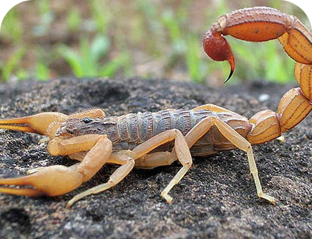

ENTENDA
RESPEITE
PROTEJA
Informação salva vidas - e deles e a sua. Saiba como agir quando animais silvestres aparecem na sua casa e onde podem ser resgatados na sua cidade.
Encontrou um animal
silvestre em perigo?

Escorpião-amarelo
Tityus serrulatus
O escorpião-amarelo é encontrado em locais escuros e úmidos, como entulhos, esgotos, ralos e terrenos baldios.

Coruja-buraqueira
Athene cunicularia
A coruja-buraqueira vive em áreas abertas e costuma fazer seus ninhos em tocas no solo. É uma ótima caçadora de pequenos animais.

Tucano
Ramphastos toco
O tucano é encontrado principalmente em florestas e áreas arborizadas. Alimenta-se de frutos, insetos e pequenos animais.

Sapo-Cururu
Rhinella icterica
O sapo-cururu vive em áreas úmidas e pode ser encontrado próximo a rios, e matas. Alimenta-se principalmente de insetos.
Resgates de Animais
Salve uma vida, eles também têm sentimentos, e são tão importantes quanto os humanos.

Feiras de Adoção
Dê um lar a quem precisa e transforme uma vida, seja um exemplo para os outros também aprenderem.